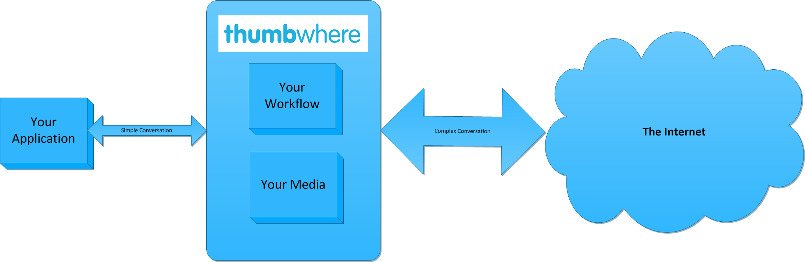
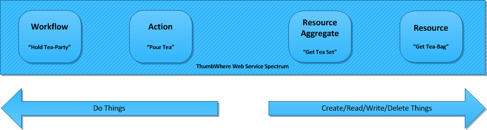
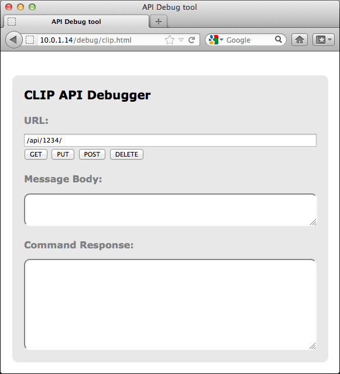
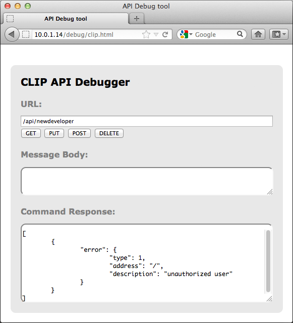
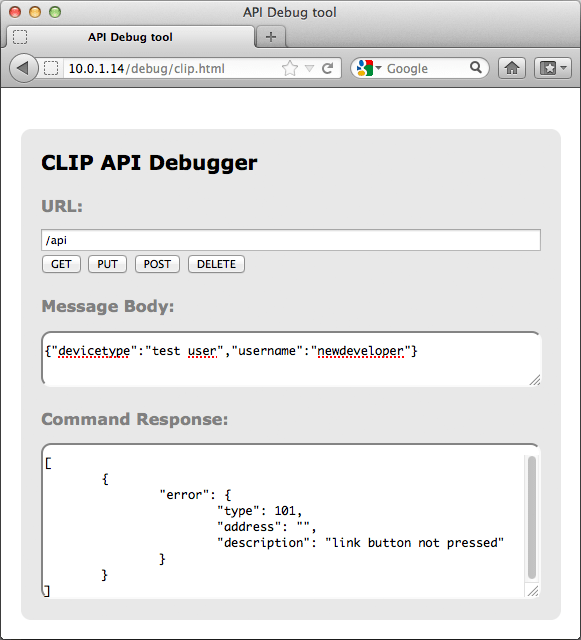
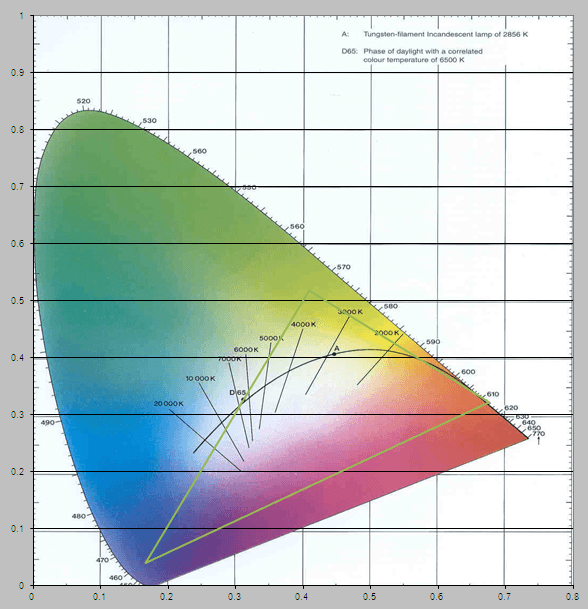
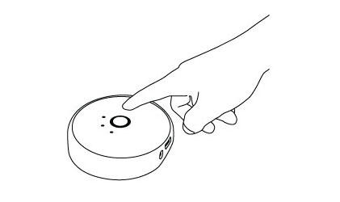

Introduction
to ThumbWhere API
ThumbWhere
ThumbWhere is software as a services (SaaS) that provides a ready made set of back end services.
We host your workflow and data and do all the heavy lifting for your application, leaving you to concentrate on what you do best, making compelling applications..
ThumbWhere provides a comprehensive and advanced API for your applications to interact with the ThumbWhere Services, so that with minimal effort your application to interact in incredible ways with the rest of the internet.

The API interface supports a continum of Workflow, Action and Resource based web services.

Getting Started
We’ve started off by publicly releasing only the core parts of our API along with some easy to follow examples for how to use them. This should be enough to get you up and running.
But First, Some Ground Rules
ThumbWhere thinks it should be YOU who profits from your work. What you create you own and are free to give away or
sell. That also means that everything connected with use of your creation is your responsibility. ThumbWhere will not
accept liability if your creation causes harm. It is also entirely up to you whether and on what terms to commercialize
your creation.
Just as “what is yours is yours”, “what is ours is ours”. The software, trademarks documentation, and any
other materials we provide to help you develop apps, including especially the interface specifications “API”
belong to ThumbWhere. It may happen that working on an app suggests an idea to you for an improvement in the API or our
materials. If you suggest any improvements to us and we adopt them, they become part of the platform used by everyone,
and belong to us.
The interface between your apps and the ThumbWhere platform will evolve over time, but we will do our best to maintain
backwards compatibility through versioned APIs.
There will be documentation covering more of our features soon. We’re even working on an iOS and Android SDK for
later this year to provide libraries which make linking api to your apps a breeze.
Feel free to post on the
developer forum to share what you are doing with api,
or to ask for information/support.
How ThumbWhere works
Overview
ThumbWhere is a system of 4 components:
-
Apps – These are programs that do things for people. Apps you develop could do anything from simply
posting photos to Twitter, turning your lights on at night or all the way up to, well anything you can imagine. They are not limited to smartphone apps.
It’s basically everything that makes use of the ThumbWhere system APIs.
-
Workflow – These are small programs using our visual tool that you have entered into the ThumbWhere portal. These perform a series of instructions that you want ThumbWhere to perform in response to something that has happened to the world.
-
Actions – These are commands that you can invoke via the web services. You can trigger inbuilt workflow or you can be workflow that you have defined.
-
Resources – This is your data. It could be photos, it could be stiock market prices, it could be a list of users, mp3 files, videos, anthing. Through the web services you can create, read, update, delete and query this data.
All requests and responses and new values are sent and returned in XML with UTF8 encoding so it’s easy to generate or parse.
Getting started
First make sure you have an API Key.
here or if you still need to buy a kit go
here.
The fastest way to learn how to build apps which control the api system is to use the simple test web app built into
every bridge. This lets you directly input commands and send them to the lights. You can look at the source HTML and
JavaScript code for some directions on how to do something different.
Step 1
First make sure your bridge is connected to your network and is functioning properly. Test that the smartphone app can
control the lights on the same network.
Step 2
Then you need to discover the IP address of the bridge on your network. You can do this in a few ways.
- Use a UPnP discovery app to find ThumbWhere api in your network.
- Use our broker server discover process by visiting
www.thumbwhere.com/api/nupnp
- Log into your wireless router and look ThumbWhere api up in the DHCP table.
Step 3
Once you have the address load the test app by visiting the following address in your web browser.
http://<bridge ip address>/debug/clip.html
You should see an interface like this.

Using this debugger utility you can populate the components of an HTTP call – the basis of all web traffic and of
the api RESTful interface.
-
URL: this is actually the local address of a specific resource (thing) inside the api system. It
could be light, a group of lights or many more things. This is the object you’ll be interacting with in this
command.
-
A body: this is the part of the message which describes what you want to change and how. Here you
enter, in JSON format, the resource name and value you’d like to change/add.
-
A method: here you have a choice of the 4 HTTP methods the api call can use.
-
GET: this is the command to fetch all information about the addressed resource
-
PUT: this is the command to modify an addressed resource
-
POST: this is the command to create a new resource inside the addressed resource
-
DELETE: this is the command to deleted the addressed resource
-
Response: In this area you’ll see the response to your command. Also in JSON format.
So let’s get started…
First let’s do a very simple command and get information about your api system.
Fill in the details below leaving the body box empty and press the
GET button.
| Address |
http://<bridge ip address>/api/newdeveloper
|
| Body |
|
| Method |
GET
|
You should see a response like below:

Congratulations you’ve just sent you first CLIP command!
Now this is the command to fetch all information in the bridge. You didn’t get much back and that’s because
you’re using an unauthorized username “newdeveloper”.
So let’s authorize “newdeveloper” for full access we do this by requesting a new username.
Fill in the info below and press the
POST button.
| Address |
http://<bridge ip address>/api
|
| Body |
{"devicetype":"test user","username":"newdeveloper"}
|
| Method |
POST
|
This command is basically saying please create a new resource inside
/api (where usernames sit) with the following properties.
When you press the
POST button you should get back an error message letting you know that you have to press the link button.
This is our security step so that only apps you want to control your lights can. By pressing the button we prove that the
user has physical access to the bridge.

Go and press the button on the bridge and then press the
POST button again and you should get a success response like below.

Congratulations you’ve just created an authorized user, which we’ll use from now on! Now if you do the first
GET command again you should get a whole lot more information about what lights you have and their states.
This data is all in JSON format so can be easily processed by your applications.
Turning a light on and off
Okay now that we have a username with permission to use the system lets start having some fun with it.
Each light has its own URL. You can see what lights you have with the following command:
| Address |
http://<bridge ip address>/api/newdeveloper/lights
|
| Body |
|
| Method |
GET
|
You should get a JSON response with all the lights in your system and their names.
Now let’s get information about a specific light. The light with id 1.
| Address |
http://<bridge ip address>/api/newdeveloper/lights/1
|
| Body |
|
| Method |
GET
|
In this response you can see all of the resources this light has. The most interesting ones are inside the state
object as these are the ones we’ll have to interact with to control the light.
Lets’ start with the “on” attribute. This is a very simple attribute that can have 2 values: true and false. So
let’s try turning the light off.
| Address |
http://<bridge ip address>/api/newdeveloper/lights/1/state
|
| Body |
{"on":false}
|
| Method |
PUT
|
Looking at the command you are sending we’re addressing the “state” object of light one and telling it to modify
the “on” value inside it to false (or off). When you press the
PUT button the light should turn off. Change the value in the body to true and the light will turn on
again.
Now let’s do something a bit more fun and start changing some colours. Enter the command below.
| Address |
http://<bridge ip address>/api/newdeveloper/lights/1/state
|
| Body |
{"on":true, "sat":255, "bri":255,"api":10000}
|
| Method |
PUT
|
We’re interacting with the same “state” attributes here but now we’re modifying a couple more attributes.
We’re making sure the light is on by setting the “on” resource to true. We’re also making sure the saturation
(intensity) of the colours and the brightness is at its maximum by setting the “sat” and “bri” resources to 255.
Finally we’re telling the system to set the “api” (a measure of color) to 10000 points (api runs from 0 to 65535).
Try changing the api value and keep pressing the PUT button and see the colour of your light changing running through
different colors.
Now you understand the basics of the commands you can send to api through this tool – but we can also
send the commands as part of an app.
Core concepts
The api system is built around the idea of everything in your system having a unique URL served by the bridge.
Interacting with these URLs lets you modify them or find out their current state as explained above.
Hue web addresses
A api resource web address will always start with the following.
http://<bridge IP address>/api
This is the RESTful root and is how your app or controller talks to the api bridge interface.
The api username
In most of the commands (the exception is creating a username) you’ll also include a username after this:
http://<bridge IP address>/api/<username>
This username determines which resources you have access to. If you provide a username that isn’t known to the
bridge then most resources won’t be available to you. Using one that is authorized, as shown in the
getting started section, will allow you to interact with pretty much everything
interesting.
Each new instance of an app should use a unique username which you generate using the
Create New User command.
Lights/groups and more
There are different kinds of resources to interact with and we’ve clustered them together with similar objects. The
four available currently are:
-
/lights resource which contains all the light resources
-
/groups resource which contains all the groups
-
/config resource which contains all the configuration items
-
/schedules which contains all the schedules
We’ll be adding more as we add features to the system
You can query resources available in your bridge by doing a
GET on its local URL. For example the following returns all configuration items in your bridge.
| Address |
http://<bridge ip address>/api/newdeveloper/config
|
| Body |
|
| Method |
GET
|
Changing a setting or resource
The principle for changing a setting, attribute or other ‘resource’ on the device is to send a
PUT request to the URL of its parent. The desired new value is attached to the request in the ‘message
body’ in JSON format.
For example to change the name of the bridge (
/config/name) we address the parent of this setting (
/config) and send the new name with the request in the message body.
| Address |
http://<bridge ip address>/api/newdeveloper/config
|
| Body |
{"name":"Developer Bridge"}
|
| Method |
PUT
|
If you’re doing something that isn’t allowed, maybe setting a value out of range or typo in the resource name,
then you’ll get an error message letting you know what’s wrong. For much more information see the
error section.
Sometimes, when you do a
GET, the JSON response will have attributes that contain an object for a value – in other words a resource
has a set of child resources.
For example:
| Address |
http://<bridge ip address>/api/newdeveloper/lights/1
|
| Method |
GET
|
gives a JSON response with an attribute called “state”. The value of state is an object which in turn contains a
whole bunch of other attributes! To modify these we would need to address
/lights/1/state.
Representations
The api system is built on the principle of representations. Each object in the api system has a corresponding
resource in the api interface (a representation of the real object). If you interact directly with these representations
and afterwards the necessary Zigbee commands are sent out to lights to effect the change.
This lets us do things fast without worrying about the wireless messages bouncing between the lights, but it can mean
that things are temporarily inconsistent. By this we mean the state of the lights and the state of their representation
are not the same for a short period. It corrects itself after a while, but for example if you set all your lights to red
and then power cycle a light so that it goes to white, it could take a few minutes for the bridge to update its
representation.
The same thing is true for our portal with a representation there, which may be temporarily inconsistent with the
bridge representation. This all lets us do things fast and deal with lots of concurrent users.
Controlling light
There are many properties that can be controlled with api – more than you might expect. All of these properties are
in the
/state resource of a light. Let’s go through them and explain.
The easy ones
“on” – This is the easiest example. A light can be on or off. So setting this resource to true
turns a light on to its last setting. Setting the resource to false turns the light off.
“bri – This is the brightness of a light from its minimum brightness 0 to its maximum brightness 255
(note minimum brightness is not off). This range has been calibrated so there a perceptually similar steps in brightness
over the range. You can set the “bri” resource to a specific value e.g. the following commands sets the lights to
42/255 of their maximum brightness.
| Address |
http://<bridge ip address>/api/newdeveloper/lights/1/state
|
| Body |
{"bri":42}
|
| Method |
PUT
|
Color gets more complicated
The color point of light has lots of ways of being quantified. The diagram below shows a plot of what is known as the
CIE color space – a green triangle outlines the colors which api can address.

All points on this plot have unique xy coordinates that can be used when setting the color of a api bulb. If an xy
value outside of the green triangle is chosen, it will produce the closest color it can make. To control lights with xy
use the “xy” resource which takes the value of an array of two values between 0 and 1 e.g.
"xy":[0.675,0.322] is
red.
We can also choose to address the color point of light in a different way, using colors on the black curved line in
the center of the diagram. This is the line that follows white colors from a warm white to a cold white. api supports
color temperatures from 2000K (warm) to 6500K (cold) with great white light. To set the light to a white value you need
to interact with the “ct” (color temperature) resource, which takes values in a scale called “reciprocal
megakelvin” or “mirek”. Using this scale, the warmest color 2000K is 500 mirek (
"ct":500) and the coldest color 6500K is 153 mirek (
"ct":153). As with xy, the light will go to the closest value it can produce if the specified
color temperature is outside of the achievable range.
The final way to choose the color of your lights is with api and saturation. These values will depend on the color
capabilities of the bulb you are using, but since all api bulbs are the same that’s not a problem. The api property at
maximum saturation basically goes around all points on the edge of the green triangle (all the most saturated
colors).
Reducing the saturation takes this api and moves it in a straight line towards the white point. So
"sat":255 always gives the most saturated colors and reducing it to
"sat":200 makes them less intense and more white.
Below are some common api values and the corresponding xy values.
| Hue |
Final-x |
Final-y |
| 0 |
6.7500E-01 |
3.2200E-01 |
| 12750 |
5.4200E-01 |
4.2000E-01 |
| 25500 |
4.0900E-01 |
5.1800E-01 |
| 36210 |
2.8800E-01 |
2.7900E-01 |
| 46920 |
1.6700E-01 |
4.0000E-02 |
| 56100 |
4.2100E-01 |
1.8100E-01 |
| 65280 |
6.7500E-01 |
3.2200E-01 |
As with bri you can choose to set “api” and “sat” to an absolute value.
So this command sets a light to blue:
| Address |
http://<bridge ip address>/api/newdeveloper/lights/1/state
|
| Body |
{"api":46920}
|
| Method |
PUT
|
We have some extra fun resources supported by the bridge you can play with.
“effect” – this resource is for dynamic effects and currently only supports two values, but
we’ll add more in the future.
{"effect":"colorloop"} puts the lights in a color looping mode until it is stopped by
sending
{"effect":"none"}.
“alert” – this resource is for temporary effects and more may come in the future. At the moment to
make the light do a blink in its current color send
{"alert":"select"}
Groups
You can also choose to control all your lights at once. For this you need to address the
/groups/0 resource (this is a special group that always contains all lights). For groups we have the
“action” resource (similar to the state resource for lights but containing the last values sent to the group rather
than a state).
You can modify resources in the “action” resource in the same way as the state resource. So the following turns
all lights off:
| Address |
http://<bridge ip address>/api/newdeveloper/groups/0/action
|
| Body |
{"on":false}
|
| Method |
PUT
|
And this sets them all to full brightness red.
| Address |
http://<bridge ip address>/api/newdeveloper/groups/0/action
|
| Body |
{"on":true,"bri":255,"sat":255,"api":0}
|
| Method |
PUT
|
Limitations
With these commands you can control any number of your lights in any way you want, just address the correct light
resource and send it the command you want.
We have some limitations to bear in mind:
- We can’t send commands to the lights too fast. If you stick to around 10 commands per second to the
/lights resource as maximum you should be fine. For
/groups commands you should keep to a maximum of 1 per second.
- If you try and control multiple conflicting parameters at once e.g.
{"ct":250,"xy":[0.5,0.5]} the lights can only physically do one, for this the
following rule applies: xy beats ct beats api, sat – Simple.
- All your lights have to be in range. If you can control them from the api app then you’re fine to play with them
via the developer interface. Remember all lights act as a signal repeater so if you want more range put a light in
between.
1. Lights API
1.1. Get all lights
| URL |
/api/<username>/lights
|
| Method |
GET
|
| Version |
1.0 |
| Permission |
Whitelist |
1.1.1. Description
Gets a list of all lights that have been discovered by the bridge.
1.1.2. Response
Returns a list of all lights in the system, each light has a name and unique identification number.
If there are no lights in the system then the bridge will return an empty object, {}.
1.1.3. Response example
{
"1": {
"name": "Bedroom"
},
"2": {
"name": "Kitchen"
}
}
1.2. Get new lights
| URL |
/api/<username>/lights/new
|
| Method |
GET
|
| Version |
1.0 |
| Permission |
Whitelist |
1.2.1. Description
Gets a list of lights that were discovered the last time a
search for new lights was performed. The list of new lights is
always deleted when a new search is started.
1.2.2. Response
| Name |
Type
|
Description
|
| Lastscan |
string |
Returns “active” if a scan is currently on-going, “none” if a scan has not
been performed since the bridge was powered on, or else the date and time that the last scan was completed in ISO
8601:2004 format (YYYY-MM-DDThh:mm:ss). |
1.2.3. Response example
{
"7": {"name": "Hue Lamp 7"},
"8": {"name": "Hue Lamp 8"},
"lastscan": "2012-10-29T12:00:00"
}
1.3. Search for new lights
| URL |
/api/<username>/lights
|
| Method |
POST
|
| Version |
1.0 |
| Permission |
Whitelist |
1.3.1. Description
Starts a search for new lights.
The bridge will search for 1 minute and will add a maximum of 15 new lights. To add further lights, the command needs
to be sent again after the search has completed. If a search is already active, it will be aborted and a new search will
start.
When the search has finished, new lights will be available using the
get new lights command. In addition, the new lights will now be
available by calling
get all lights or by calling
get group attributes on group 0. Group 0 is a special group that
cannot be deleted and will always contain all lights known by the bridge.
1.3.2. Response
Contains a list with a single item that details whether the search started successfully.
1.3.3. Response example
[ { "success": { "/lights": "Searching for new devices" } } ]
1.4. Get light attributes and state
| URL |
/api/<username>/lights/<id>
|
| Method |
GET
|
| Version |
1.0 |
| Permission |
Whitelist |
1.4.1. Description
Gets the attributes and state of a given light.
1.4.2. Response
| Name |
Type
|
Description
|
| State |
state object |
Details the state of the light, see the state table below for more details. |
| Type |
string |
A fixed name describing the type of light e.g. “Extended color light”. |
| name |
string 0, 32 |
A unique, editable name given to the light. |
| modelid |
string 6, 6 |
The hardware model of the light. |
| swversion |
string 8, 8 |
An identifier for the software version running on the light. |
| Pointsymbol |
object |
This parameter is reserved for future functionality. |
The state object contains the following fields
| Name |
Type
|
Description
|
| On |
bool |
On/Off state of the light. On=true, Off=false |
| Bri |
uint8 |
Brightness of the light. This is a scale from the minimum brightness the light is
capable of, 0, to the maximum capable brightness, 255. Note a brightness of 0 is not off. |
| Hue |
uint16w |
Hue of the light. This is a wrapping value between 0 and 65535. Both 0 and 65535 are
red, 25500 is green and 46920 is blue. |
| sat |
uint8 |
Saturation of the light. 255 is the most saturated (colored) and 0 is the least
saturated (white). |
| xy |
list 2..2 of float 4 |
The x and y coordinates of a color in
CIE color space.
The first entry is the x coordinate and the second entry is the y coordinate. Both x and y are between 0 and
1. |
| ct |
uint16 |
The Mired Color temperature of the light. 2012
connected lights are capable of 153 (6500K) to 500 (2000K). |
| alert |
string |
The alert effect, which is a temporary change to the
bulb’s state. This can take one of the following values:
“none” – The light is not performing an alert effect.
“select” – The light is performing one
breathe cycle.
“lselect” – The light is performing breathe cycles for 30 seconds or until an
"alert": "none" command is received.
Note that in version 1.0 this contains the last alert sent to the light and not its current state. This will
be changed to contain the current state in an upcoming patch. |
| effect |
string |
The dynamic effect of the light, can either be “none” or “colorloop”.
If set to colorloop, the light will cycle through all apis using the current brightness and saturation
settings. |
| colormode |
string 2, 2 |
Indicates the color mode in which the light is working, this is the last command type
it received. Values are “hs” for Hue and Saturation, “xy” for XY and “ct” for Color Temperature. This
parameter is only present when the light supports at least one of the values. |
| reachable |
bool |
Indicates if a light can be reached by the bridge. Currently always returns true,
functionality will be added in a future patch. |
1.4.3. Response example
{
"state": {
"api": 50000,
"on": true,
"effect": "none",
"alert": "none",
"bri": 200,
"sat": 200,
"ct": 500,
"xy": [0.5, 0.5],
"reachable": true,
"colormode": "hs"
},
"type": "Living Colors",
"name": "LC 1",
"modelid": "LC0015",
"swversion": "1.0.3",
"pointsymbol": {
"1": "none",
"2": "none",
"3": "none",
"4": "none",
"5": "none",
"6": "none",
"7": "none",
"8": "none"
}
}
1.4.4. Notes
Note the usage of the colormode parameter: There are 3 ways of setting the light color: xy, color temperature (ct) or
api and saturation (hs). A light may contain different settings for xy, ct and hs, but only the mode indicated by the
colormode parameter will be certain to give the active light color.
1.5. Set light attributes (rename)
| URL |
/api/<username>/lights/<id>
|
| Method |
PUT
|
| Version |
1.0 |
| Permission |
Whitelist |
1.5.1. Description
Used to rename lights. A light can have its name changed when in any state, including when it is unreachable or
off.
1.5.2. Body arguments
| Name |
Type
|
Description
|
Required
|
| Name |
string 0, 32 |
The new name for the light. If the name is already taken a space and number will be
appended by the bridge e.g. “Bedroom Light 1”. |
Required |
1.5.3. Body
[{"success":{"/lights/1/name":"Bedroom Light"}}]
1.5.4. Response
A response to a successful
PUT request contains confirmation of the arguments passed in. Note: If the new value is too large to return
in the response due to internal memory constraints then a value of “Updated.” is returned.
1.5.5. Response example
{
"hue": 50000,
"on": true,
"bri": 200
}
1.6. Set light state
| URL |
/api/<username>/lights/<id>/state
|
| Method |
PUT
|
| Version |
1.0 |
| Permission |
Whitelist |
1.6.1. Description
Allows the user to turn the light on and off, modify the api and effects.
1.6.2. Body arguments
| Name |
Type
|
Description
|
|
| on |
bool |
On/Off state of the light. On=true, Off=false |
Optional |
| bri |
uint8 |
The brightness value to set the light to.
Brightness is a scale from 0 (the minimum the light is capable of) to 255 (the maximum).
Note: a brightness of 0 is not off.
e.g. “brightness”: 60 will set the light to a specific brightness |
Optional |
| api |
uint16w |
The api value to set light to.
The api value is a wrapping value between 0 and 65535. Both 0 and 65535 are red, 25500 is green and 46920 is
blue.
e.g. “api”: 50000 will set the light to a specific api. |
Optional |
| sat |
uint8 |
Saturation of the light. 255 is the most saturated (colored) and 0 is the least
saturated (white). |
Optional |
| xy |
list 2..2 of float 4 |
The x and y coordinates of a color in
CIE color space.
The first entry is the x coordinate and the second entry is the y coordinate. Both x and y must be between 0
and 1.
If the specified coordinates are not in the
CIE color space, the closest color to the coordinates
will be chosen. |
Optional |
| ct |
uint16 |
The Mired Color temperature of the light. 2012
connected lights are capable of 153 (6500K) to 500 (2000K). |
Optional |
| alert |
string |
The alert effect, is a temporary change to the bulb’s
state, and has one of the following values:
“none” – The light is not performing an alert effect.
“select” – The light is performing one
breathe cycle.
“lselect” – The light is performing breathe cycles for 30 seconds or until an
"alert": "none" command is received. |
Optional |
| effect |
string |
The dynamic effect of the light. Currently “none” and “colorloop” are
supported. Other values will generate an error of type 7.
Setting the effect to colorloop will cycle through all apis using the current brightness and saturation
settings. |
Optional |
| transitiontime |
uint16 |
The duration of the transition from the light’s current state to the new state.
This is given as a multiple of 100ms and defaults to 4 (400ms). For example, setting
transistiontime:10 will make the transition last 1 second. |
Optional |
1.6.3. Body example
{
"7": {"name": "Hue Lamp 7"},
"8": {"name": "Hue Lamp 8"},
"lastscan": "2012-10-29T12:00:00"
}
1.6.4. Response
A response to a successful PUT request contains confirmation of the arguments passed in. Note: If the new value is too
large to return in the response due to internal memory constraints then a value of “Updated.” is returned.
1.6.5. Response example
[
{"success":{"/lights/1/state/bri":200}},
{"success":{"/lights/1/state/on":true}},
{"success":{"/lights/1/state/hue":50000}}
]
1.6.6. Notes
A light cannot have its api, saturation, brightness, effect, ct or xy modified when it is turned off. Doing so will
return error 201.
There are 3 methods available to set the color of the light – api and saturation (hs), xy or color temperature (ct).
If multiple methods are used then a priority is used: xy > ct > hs. All included parameters will be updated but the
‘colormode’ will be set using the priority system.
Glossary terms
The following terms are used in the documentation and may not be immediately obvious to the user.
| Term |
Description
|
| bridge |
The ThumbWhere base station that is wired to your network. |
| ISO 8601:2004 |
A date in the format YYYY-MM-DDThh:mm:ss |
| breathe cycle |
The light or lights do one smooth transition from the current state to a higher
brightness in the current color to a lower brightness in the current color and back to the original state. |
| alert effect |
Alert effects are used to set the lamp to a time limited dynamic effect i.e. the
lamps will change there lamps during a short time period and then return to their previous value. Example is the
select breathe cycle. |
| dynamic effect |
Dynamic effects are changes over time of the light state which continue until the
user stops the effect. Example is the color loop. |
| Link button |
The circular button on the top of the api bridge.
 |
Message structure and response
The CLIP API consists of a set of commands that can be called over a REST web service. The API commands fall into one
of 4 categories, depending on the HTTP method used:
Method: GET
Used for: Reading specific data from the bridge.
Returns: JSON containing the requested resource.
Method: PUT
Used for: Modifying existing data on the bridge.
Returns: A list containing one item per parameter modified.
Example:
[{"success":{"/lights/1/state/api":254}}]
Method: POST
Used for: Adding new data to the bridge.
Returns: A list containing one item per resource created.
Example:
[{"success":{"id":"/schedules/7"}}]
Method: DELETE
Used for: Deleting data from the bridge
Returns: A list containing one item per resource deleted.
Example:
[{"success":"/groups/1 deleted"}]
Commands using
PUT and
POST methods will normally require a message body to be attached to the request. The message body must be
formatted using JavaScript Object Notation (JSON). More details and examples for formatting the message body can be found
in the documentation for each command.
Error messages
Where error messages are used in the API documentation, it is recommended that a link to the error messages page with
a suitable anchor tag be provided.
If an API call fails to execute an error message is returned. This will take the following form:
{
"error": {
"type": <ID> ,
"address": </resource/parameteraddress>,
"description": <description>
}
}
One error message per failed action will be returned using a priority system. The priority system uses the error
number, with a lower number meaning a higher priority. In the case of a
PUT command, an error may be given for each parameter on which a change was attempted.
The following tables list all error codes that are used by the bridge.
Key:
<resource>
|
Resource being acted on e.g. /lights/1 |
<method_name>
|
HTTP Method e.g.
PUT/POST/DELETE/GET |
<parameter>
|
URI of the parameter being modified e.g.
/lights/1/name |
<value>
|
Value the parameter is being set to e.g. 128 |
Generic Errors
| ID |
Description
|
Details
|
| 1 |
unauthorized user |
This will be returned if an invalid username is used in the request, or if the
username does not have the rights to modify the resource. |
| 2 |
body contains invalid JSON |
This will be returned if the body of the message contains invalid JSON. |
| 3 |
resource,
<resource>, not available |
This will be returned if the addressed resource does not exist. E.g. the user
specifies a light ID that does not exist. |
| 4 |
method,
<method_name>, not available for resource,
<resource> |
This will be returned if the method (
GET/POST/PUT/DELETE) used is not supported by the URL e.g.
DELETE is not supported on the
/config resource |
| 5 |
missing parameters in body |
Will be returned if required parameters are not present in the message body. The
presence of invalid parameters should not trigger this error as long as all required parameters are present. |
| 6 |
parameter,
<parameter>, not available |
This will be returned if a parameter sent in the message body does not exist. This
error is specific to
PUT commands; invalid parameters in other commands are simply ignored. |
| 7 |
invalid value,
<value>, for parameter,
<parameter> |
This will be returned if the value set for a parameter is of the incorrect format or
is out of range. |
| 8 |
parameter,
<parameter>, is not modifiable |
This will be returned if an attempt to modify a read only parameter is made. |
| 901 |
Internal error,
<error code> |
This will be returned if there is an internal error in the processing of the command.
This indicates an error in the bridge, not in the message being sent. |
Command Specific Errors
| ID |
Description
|
Details
|
| 101 |
link button not pressed |
The link button has not been pressed in the last 30 seconds. |
| 201 |
parameter,
<parameter>, is not modifiable. Device is set to off. |
This will be returned if a user attempts to modify a parameter that cannot be
modified due to the current state of the device. This will most commonly be returned if the
api/sat/bri/effect/xy/ct parameters are modified while the on parameter is false. |
| 301 |
group could not be created. Group table is full. |
The bridge can store a maximum of 16 groups. This error will be returned when trying
to add a new group if the limit has been reached. |
| 302 |
device,
<id>, could not be added to group. Device’s group table is full. |
The lamp can store a maximum of 16 groups. This error will be returned when trying to
add a new group if the limit has been reached. |
Datatypes
All data types have a short hand used throughout the API. All uses of the shorthand in the main API documentation
should link through to the data types page, with an appropriate anchor, and/or display the data type description on
hover.
Below is a list of data types used by the API and their short hand used in the API documentation.
| Short Hand |
Description
|
| string n..m |
A string in UTF8 encoding where n..m specifies the minimum number of characters, n,
and maximum number, m.
If n and m are not specified then only certain values are accepted as specified in the description. |
| uint8 |
8 bit, unsigned, non-wrapping integer. i.e. an integer in the range of 0 to 255 where
integer values outside this range are invalid. |
| uint16 |
16 bit, unsigned, non-wrapping integer. i.e. an integer in the range of 0 to 65535
where integer values outside this range are invalid. |
| uint16w |
16 bit, unsigned, wrapping integer. i.e. an integer in the range of 0 to 65535 where
integer values outside this range are truncated to 16 bit e.g. 65536 wraps to 0. |
| list n..m of x |
A list of items of type x. Where x is another entry in this table. A list is
formatted as comma separated values totally enclosed in square brackets e.g.
[1,2,3].
n..m specifies the minimum number of entries in list, n, and maximum number, m. |
| bool |
A Boolean value which can take the values
true or
false only. |
| object |
An object value is a JSON compliant object. This is of the format of zero or more key
value pairs encapsulated in curly braces {}. |
| float n |
A float object is a numeric value expressed in decimal format with n decimal places
kept. Further provided decimal data is truncated. E.g 0.9988 |